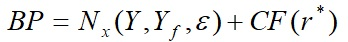
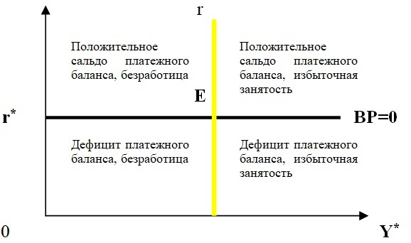
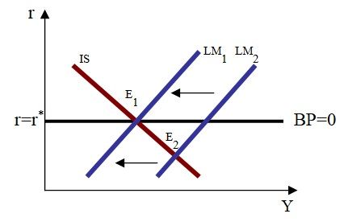
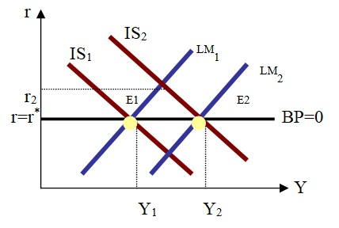

В рассматриваемой модели капитал является абсолютно мобильным, то есть свободно перетекает из страны в страну, а инвесторы могут приобретать активы в любой стране по своему выбору. Сальдо платежного баланса ВР равно сумме сальдо торгового баланса Nx и сальдо счета капитала CF:

.Увеличение внутреннего дохода ухудшает торговый баланс, а рост внутренних процентных ставок выше мирового уровня ведет к притоку капитала и тем самым к улучшению баланса движения капитала.

Следовательно, при возрастании внутреннего дохода даже незначительного повышения процентных ставок достаточно для сохранения равновесия совокупного платежного баланса.
В условиях полной мобильности капитала платежный баланс находится в равновесии, если процентные ставки в нашей стране равны зарубежным процентным ставкам.
Модификация стандартной модели IS-LM для открытой экономики в условиях полной мобильности капитала получила название модели Манделла-Флеминга. Рассмотрим два основных случая движения капитала в этой модели.
Случай абсолютной мобильности капитала при режиме фиксированных валютных курсов.
Денежная экспансия. Незначительное превышение уровня внутренней процентной ставки выше мировой вызывает приток капитала, при более низком уровне – отток. Кредитно-денежная экспансия, снижающая процентную ставку до уровня Е2, оказывает понижательное давление на валютный курс. Центральный банк вынужден проводить интервенции, продавая иностранную и покупая национальную валюту, до тех пор, пока LM не сместится обратно в точку Е.

Достичь стимулирующего эффекта можно только в случае девальвации валюты. Таким образом, в условиях фиксированного валютного курса кредитно-денежная политика недейственна, но этот режим позволяет сглаживать последствия от потрясений в денежной сфере, оставляя стабильным уровень дохода.
Фискальная экспансия. Если, к примеру, правительство стимулирует совокупный спрос путем увеличения государственных расходов, то IS сдвигается вправо и r окажется выше мировой. Рост r вызовет приток иностранного капитала в страну, что приведет к росту спроса на отечественную валюту. Чтобы обеспечить стабильность валютного курса, Центральный банк увеличивает количество денег и LM смещается вправо.
Таким образом, фискальная политика в условиях фиксированного валютного курса оказывается действенной, так как приводит к росту совокупного спроса и выпуска. Этого же можно достичь и за счет проведения политики протекционизма, ограничивающую импорт.

Таким образом, фискальная политика в условиях фиксированного валютного курса оказывается действенной, так как приводит к росту совокупного спроса и выпуска. Этого же можно достичь и за счет проведения политики протекционизма, ограничивающую импорт.